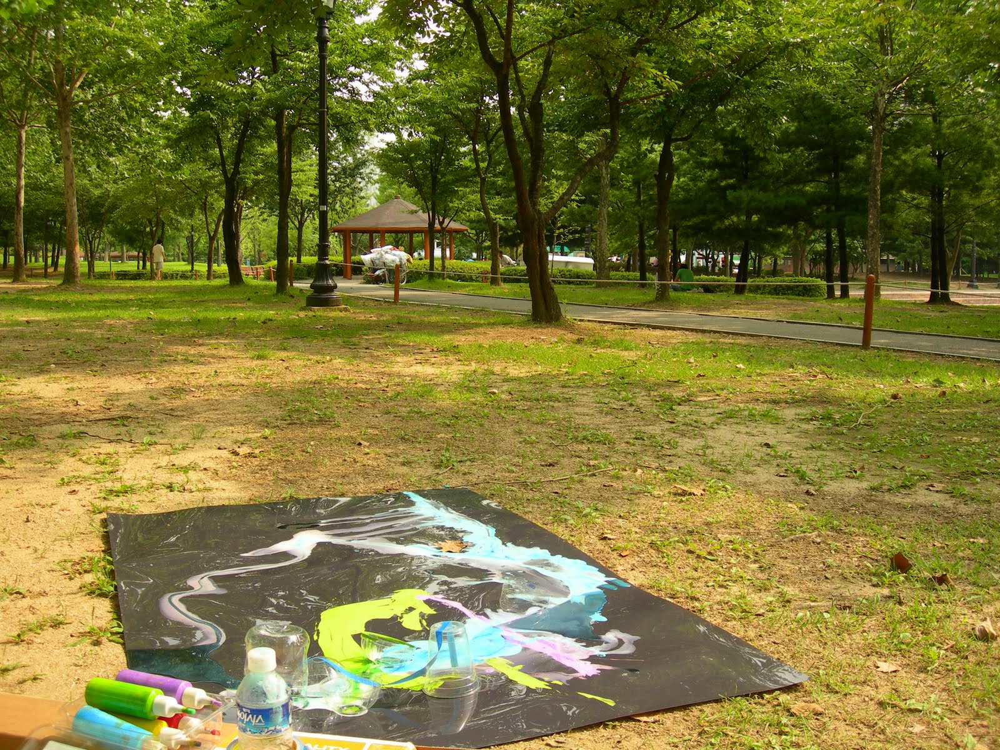
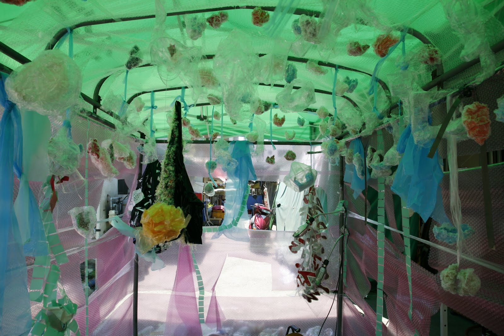
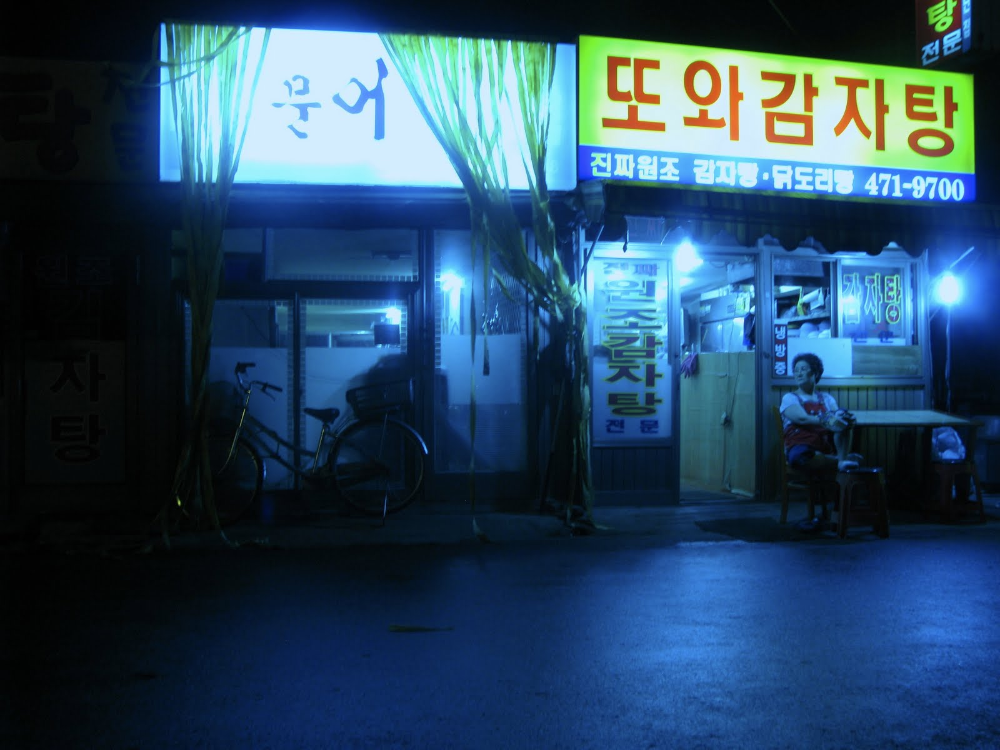

  
Climate record processes
My work deals with the effects of weather and clime on painting. Through sensitive materials exposed under every sort of climatic conditions I generate paintings as images recording and portraying the differences between media, space and time.
I consider time a vital element for transformation. These works can be of any type; impermeable or they may end up destroyed by the sunlight or the pouring rain.
기후 기록의 과정
내 작업은 날씨와 기후가 회화에 미치는 영향을 다룬다. 매우 민감한 재료를 다양한 종류의 기후 조건에 노출시켜서 나는 미디어와 공간 그리고 시간 사이의 차이점들을 기록하고 묘사하는 이미지로서의 회화 작업을 제작한다.
seoksuartproject.blogspot.com 에서 옮김
RESUME
Contact Information
Name Gaia Zevallos
Address concepcion arenal 3408, Buenos Aires, Argentina.
Telephone 054-11-4774-7213
Cell Phone 054-11-15-59583741
Email : golosinacanibal@gmail.com
Url: http://flickr.com/photos/gala_berger
Personal Information
Date of Birth september 15 1983
Place of Birth Villa Gesell, pc de Buenos Aires, argentina.
Citizenship FrancoArgentina
Gender Femele
Education
1998-2001- High School- degree: Arts, disegn and comunication-
2002- University IUNA institute universitary national of arts- degree:
Bachelor of Visual arts, -specification: Painting
Languages Spanish,English, and Italian
Others:
Arts clinics (2006) with Leopoldo Estol, (2008-2009) with Eduardo Navarro
Works with Eugenio Cuttica, Martin di Paola,.
Founder member of ANGs organization for artist
Shows
2008-Tour facma-colectiva, agosto, Alemania
Mirada de artista-colectiva, julio, CC. Borges, Capital Federal
Galería Proyecto A, ArteBa, junio, Capital Federal
Taller abierto, junio, Carlos Bissolino Casa.
Casona de los Oliveira, mayo, Bs.As.
Avalancha de los nerds, abril, Galería Masotta Torres, Bs.As.
Avalancha de los nerds II, Prilidiano Pueyrredón, Capital Federal, marzo.
2004- Muestra Intervención Virtual (Palais de Glacè, C.C. recoleta, Museo Nacional de Bellas artes) en site en
construction
2003-Intervencion Urbana- Veronica pc Bs As
2002-Muestra colectiva “Ismuth”- Casona del Arte. Cap
Muestra individual “Lo frio y lo caliente”- C.C Balvanera Sur
2001-Muestra individual “Gala”- Villa Gesell
Muestra colectiva “M.O.R”-Villa Gesell
2000-Bienal de Arte joven- Avellaneda
Muestra colectiva del Bosque-Pinamar
1999-Muestra colectiva la Lucila del Mar-Lucila del Mar
Muestra Loft de arte joven-Villa Geselll
1998-Muestra colectiva “Mirarte Expansivo”-Villa Gesell
Muestra colectiva “Mirarte”-Avellaneda
Muestra “jóvenes a Federico Garcia Lorca”-Villa Gesell
Muestra colectiva Auditorium-Mar del Plata
2009-08-03
sap2009.egloos.com 에서 옮김
Climate record processes video
"Anyang river"
2009-07-19
sap2009.egloos.com 에서 옮김
Tecno baby video
2009-06-29
sap2009.egloos.com 에서 옮김